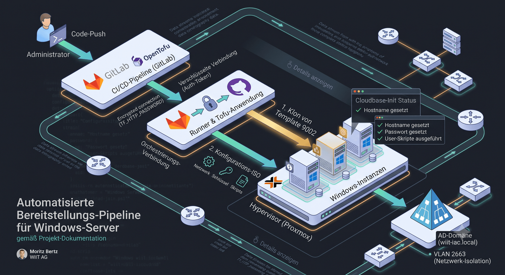
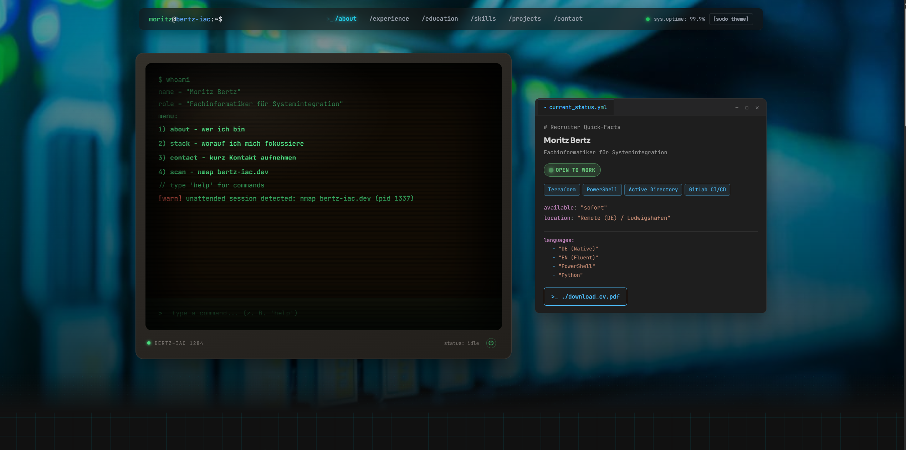
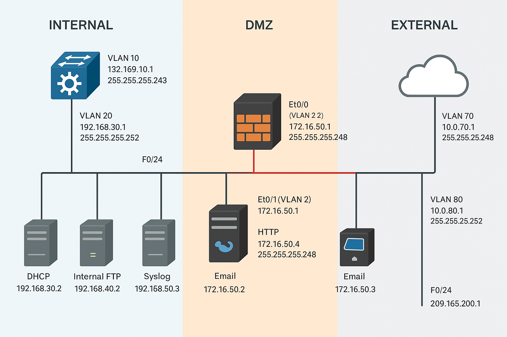
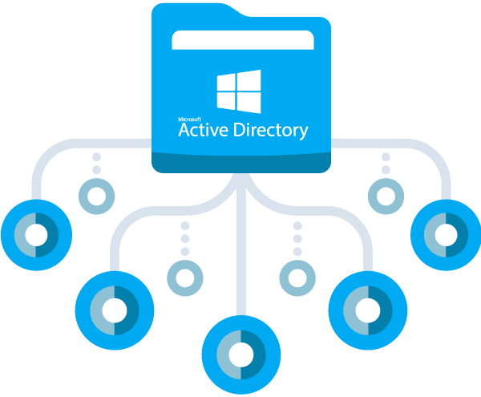
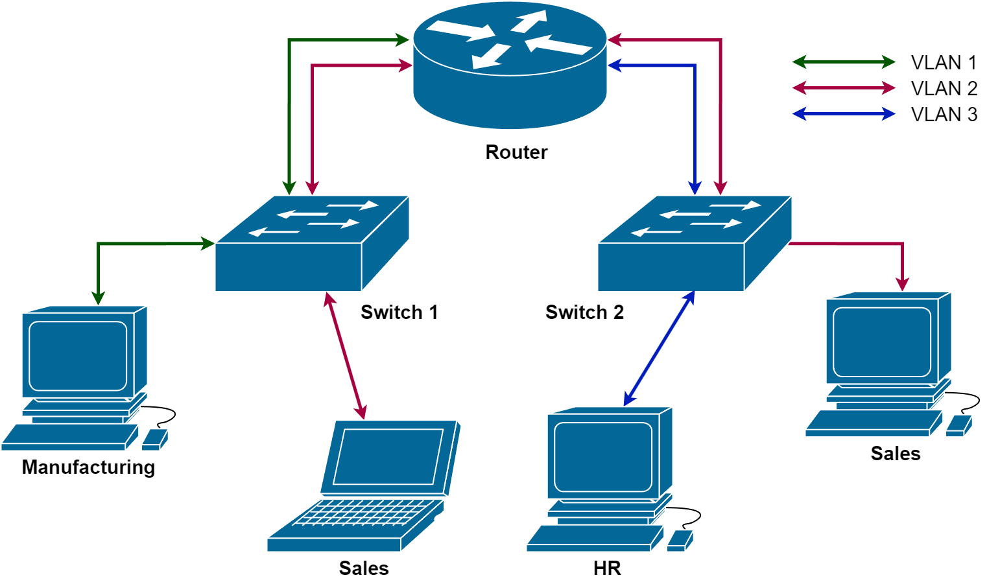
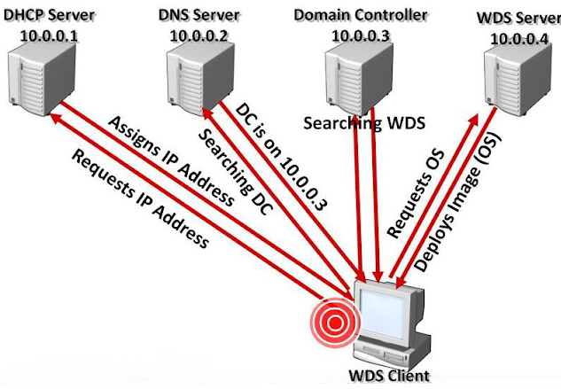
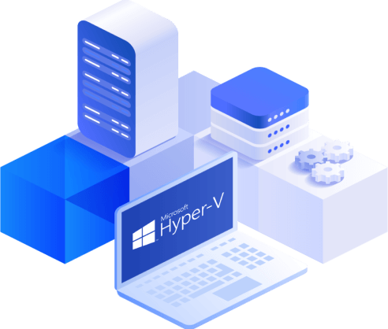
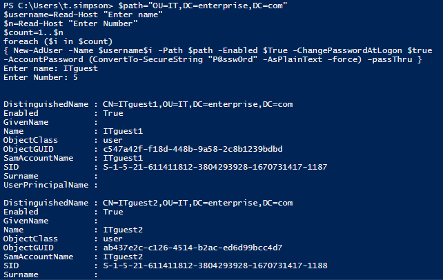

Cluster Healthy (4 Nodes Active)
// 8 Projekt-Ordner, ein Klick öffnet den Explorer

Abschlussprüfung Teil 2 bei der WIIT AG: Realisierung einer vollständig automatisierten Zero-Touch-Bereitstellung für Windows-Server-Instanzen mittels Infrastructure as Code, statt der bisherigen manuellen Vorlagen-Duplizierung (~3h pro Server).
💡 Terraform/OpenTofu ist Cloud-Provider-agnostisch – dieselbe IaC-Methodik lässt sich direkt auf AWS, Azure oder GCP übertragen.

Eine responsive Portfolio-Website, die meine Fähigkeiten und Projekte präsentiert.

Ein komplexes Netzwerk-Setup mit DMZ (Demilitarized Zone) zur sicheren Trennung von internen und externen Diensten.

Einrichtung und Konfiguration einer Active-Directory-Infrastruktur mit Gruppenrichtlinien.

Implementierung einer VLAN-basierten Netzwerksegmentierung mit Inter-VLAN-Routing.

Einrichtung eines Windows Deployment Services Servers für automatisierte Systeminstallationen.

Implementierung einer Hyper-V-basierten Virtualisierungsinfrastruktur.

Entwicklung von PowerShell-Skripten zur Automatisierung von Benutzeranlagen.